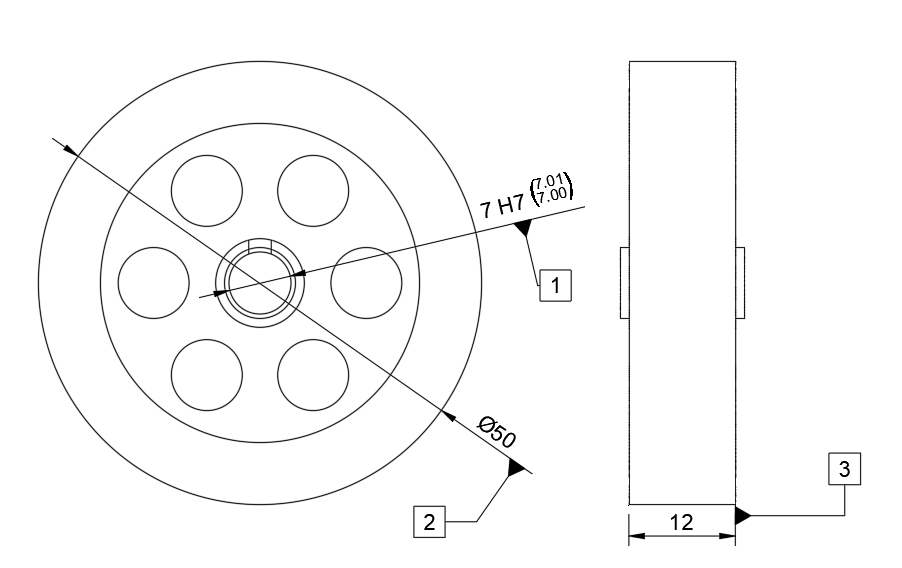

FØRSTEEMNEKONTROLFAI-03-FLYWHEELREV C · 1 / 1
PROJEKTBASERET KONTROLRAPPORT · FLAME EATER
Svinghjul
Kontrol af centerhul, yderdiameter og tykkelse mod projektets fremstillingsgrundlag.
DispositionGODKENDT3/3 karakteristika
ProjektFlame Eater
MaterialeMessing Ms58
Kontroldato06.04.2026
Kontrolleret afGlen Cilinder-Hansen
DokumentFAI-03-FLYWHEEL
RevisionC · 15.10.2026
ProjektstatusUddannelsesprojekt
Kontrolomfang3 udvalgte hovedmål
Kontrolgrundlag
Tegningsreference + acceptkriterier
- Grundlag
- Flame Eater tegningssæt
- Accept
- Angivne mål og tolerancer
- Funktion
- Centerhul vurderes mod H7-grænser
Måleresultater
Alle mål i mm| Nr. | Karakteristik | Nominel | Nedre grænse | Øvre grænse | Målt | Afvig. | Status |
|---|---|---|---|---|---|---|---|
| 1 | Centerhul Ø | 7.000 mm | 7.000 mm | 7.015 mm | 7.010 mm | +0.010 mm | PASS |
| 2 | Svinghjul diameter | 50.000 mm | 49.900 mm | 50.100 mm | 50.000 mm | 0.000 mm | PASS |
| 3 | Svinghjul tykkelse | 12.000 mm | 11.900 mm | 12.100 mm | 12.040 mm | +0.040 mm | PASS |
KonklusionHovedmål og centerhul er godkendt.
Alle tre registrerede karakteristika ligger inden for deres specificerede grænser.
FrigivelseGlen Cilinder-HansenDatum PrototypingKontrolleret · 06.04.2026REV C · 15.10.2026
Dokumentdesign og struktur forenklet. Måledata uændret.
Dokumentdesign og struktur forenklet. Måledata uændret.